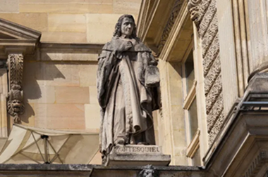
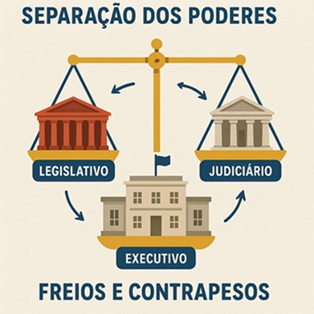
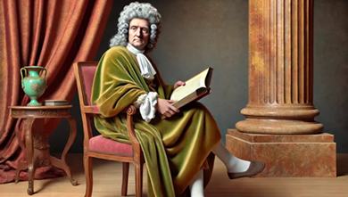

Editorial
A teoria da separação dos poderes, proposta por Montesquieu, continua essencial para proteger a democracia. Ao dividir o poder entre Legislativo, Executivo e Judiciário, evita-se abusos e garante-se a liberdade dos cidadãos. Em tempos de ameaça às instituições, defender esse equilíbrio é defender a própria democracia.
Montesquieu e o Poder da Separação: A Teoria que Moldou as Democracias Modernas
No século XVIII, em plena era do Iluminismo, um pensador francês lançou as bases para aquilo que hoje consideramos essencial em uma sociedade democrática: a divisão de poderes. Charles-Louis de Secondat, o Barão de Montesquieu, formulou uma das teorias políticas mais influentes da história: a teoria da separação dos poderes.

Publicada em 1748, sua obra mais famosa, "O Espírito das Leis", não apenas analisava as leis em diferentes culturas e épocas, mas propunha uma organização racional do Estado que pudesse garantir a liberdade dos cidadãos e evitar abusos de autoridade.
O QUE DIZ A TEORIA?
Montesquieu defendia que o poder político não deveria estar concentrado nas mãos de uma única pessoa ou instituição. Segundo ele, o Estado deve ser dividido em três poderes independentes e harmônicos entre si:
- Poder Legislativo: responsável por criar as leis.
- Poder Executivo: encarregado de aplicar e administrar as leis.
- Poder Judiciário: encarregado de julgar e interpretar as leis.

A ideia era simples, mas revolucionária: "Todo homem que tem poder é tentado a abusar dele", escreveu o filósofo. A única maneira de impedir isso seria distribuindo o poder de forma equilibrada.
INFLUÊNCIA GLOBAL
A teoria da separação dos poderes teve impacto direto na formação de diversas constituições modernas, especialmente a dos Estados Unidos, em 1787. A estrutura tripartite do governo norte-americano é um reflexo direto do pensamento de Montesquieu.
No Brasil, a Constituição de 1988 também adotou esse modelo. O Legislativo (Congresso Nacional), o Executivo (Presidência da República) e o Judiciário (STF e demais instâncias) são instituições distintas, com autonomia para agir e limites bem definidos.
ATUALIDADE
Mesmo séculos depois, a teoria de Montesquieu continua sendo um alicerce para as democracias. Em tempos de polarização política e desafios às instituições democráticas, seu pensamento serve como um lembrete: liberdade e justiça só podem existir onde há equilíbrio e limites ao poder.

Segundo a professora de Ciência Política da USP, Mariana Tavares, “Montesquieu continua atual porque sua proposta protege os cidadãos do autoritarismo. Sem separação de poderes, a democracia perde seu significado”.
CONCLUSÃO
Montesquieu não apenas teorizou sobre o poder — ele criou um modelo que ainda sustenta grande parte dos governos democráticos do mundo. Sua obra é um legado de vigilância, liberdade e equilíbrio.
Em tempos de crise institucional, vale lembrar as palavras do filósofo: “A liberdade é o direito de fazer tudo o que as leis permitem.”